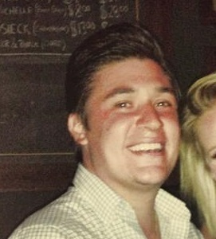

About Me
I was Born and raised in the Mile High City. I graduated from Northglenn High school in 2004, and attended Colorado State University, getting my BA in Communications studies in 2009. I'm an avid Bigfoot hunter, and enjoy big game hunting on the Serengeti during my down time. When I'm not tackling big projects out in the bush, I enjoy spending my time with my girlfriend and friends. I also enjoy watching movies, playing video games and reading comic books.
I am currently attending coding boot-camp at the University of Denver. I hope to one day learn all there is to know about fullstack, so I can bring the world to it's knees in my never-ending attempt to take over humanity.
I'm really nice guy who's very approachable -- feel free to contact me whenever.